Crew Resource Management and Threat and Error Management following the OM D: human error, safety culture, the TEM model with interactive threat/error/UAS exercises, situation awareness, decision making, communication, automation, NOTECHS and case studies.
13 lessons · 4 modules · about 2.5 hours
Training material only. It does not replace the Aircraft Flight Manual, FCOM, QRH, MEL or the Domestic Airlines Operations Manual, which always take precedence.
Lesson 01: CRM: Origins, Generations and the OM D Programme
Lesson 1 of 13 · about 12 min
Learning objectives
Explain why CRM was created.
Describe the generations of CRM up to TEM.
Describe the company CRM/TEM training programme in the OM D.
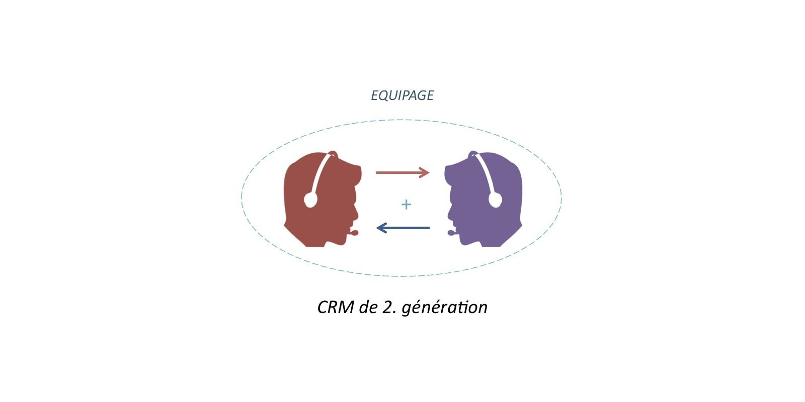
Generations of CRM.
Why CRM?
The study of dozens of air disasters in the 1970s showed the large share of non-technical factors: the most frequent human errors concerned communication, decision making and leadership — not flying skill. Technically competent crews had accidents because the team did not work.
The first question CRM had to answer: how can a young, inexperienced co-pilot tell an experienced captain that he is wrong — and how can the captain listen? The same question applies to a junior cabin crew member and the senior cabin crew member.
Generations of CRM
The beginnings: two pilots who interact — Cockpit Resource Management. Source: Domestic Airlines CRM course.
At the end of the 1980s CRM introduced the notion of a crew on the flight deck: Cockpit Resource Management became Crew Resource Management, with team building, stress management and situation awareness.
Second generation: the crew on the flight deck. Source: Domestic Airlines CRM course.
CRM is not only for pilots
In the 1990s CRM extended to cabin crew, maintenance, dispatch and ATC. It was then understood as a way to improve teamwork — and teamwork is one of the means to the end: fewer errors in flight.
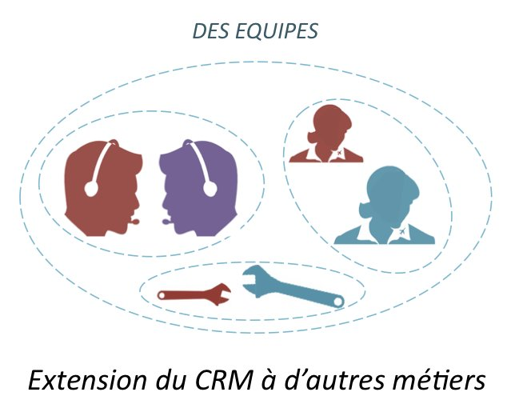
CRM extended to other trades: cabin crew, maintenance, ground staff. Source: Domestic Airlines CRM course.
Today: TEM
The latest generation widens the pilot's view to the environment and to time: which threats could become errors or undesired states, and how to anticipate them? TEM grew out of CRM line observations, which showed that anticipation is a keystone of safety — a move from a reactive to a proactive approach.
Tap a card to turn it over.
The company programme (OM D 1.5 and 2.4.5)
Course
Duration
Initial CRM/TEM (joining the company)
12 h
DCC — change of type
6 h
DCC — change of operator
6 h
Command course
9 h
Recurrent training
6 h each year; all initial elements in depth over a 3-year cycle
The recurrent programme is updated from the results of crew CRM/TEM assessments. Crew members are not assessed on the CRM/TEM elements of recurrent training (OM D 2.4.5.2.5); CRM/TEM is observed in the simulator and on the line with the non-technical skills form (OM D 2.6.68).
OM D key elements and this course
OM D key element (1.5.3)
Lessons
Human error and reliability; error chain; prevention and detection
2, 5
Company safety culture; SOPs; organisational factors
3
Threat and error management
4–7
Information acquisition and processing; situation awareness; workload management
8
Decision making; stress, stress management, fatigue and vigilance
9
OM D key elements and this course (2)
OM D key element (1.5.3)
Lessons
Communication and co-ordination inside and outside the flight deck; leadership and team behaviour; synergy
10
Automation and philosophy of the use of automation
11
Assessment of non-technical skills (2.6.68)
12
Case studies
7, 11, 13
Key takeaways
CRM was born from accidents caused by communication, decision and leadership failures.
Cockpit → Crew → all trades → TEM: from reactive to proactive.
OM D: initial 12 h, DCC 6 h, command 9 h, recurrent 6 h with every element in depth over 3 years.
Knowledge check
According to the OM D, how long is the initial CRM/TEM course?
6 h
9 h
12 h
18 h
Answer: C. 12 h initial; 6 h recurrent and DCC; 9 h for the command course.
Module 1 · CRM Foundations
Lesson 02: Human Error, Reliability and the Error Chain
Lesson 2 of 13 · about 12 min
Learning objectives
Explain why human error is normal and how it is managed.
Describe the error chain and the defences.
Distinguish error causality from error management.
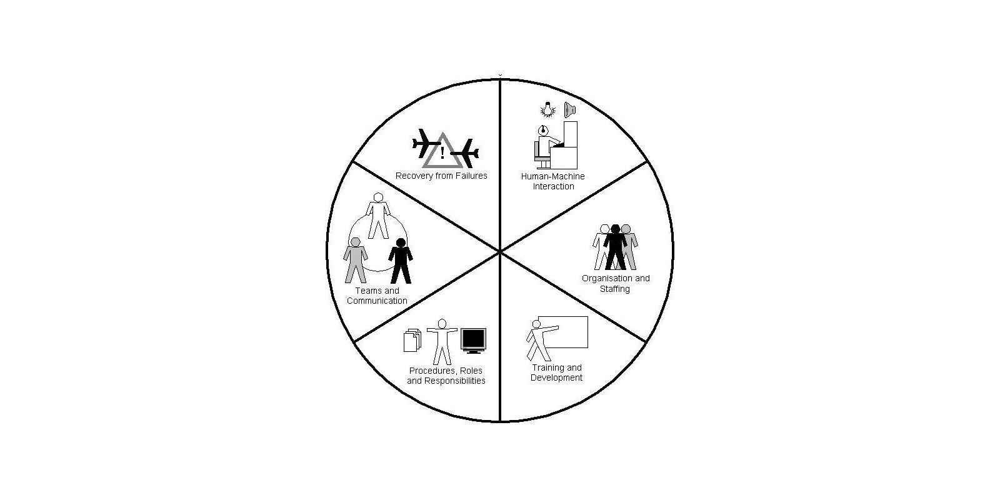
Areas of human factors.
Error is normal
About 80 % of aviation accidents involve pilot error — committed by qualified, experienced and trained crews. Error is part of human performance: the aim is not zero error, but errors detected and managed before they matter.
Human factors
Human factors is the science of the interaction between people, technology and organisation. Its areas range from the human–machine interface to teams and communication, procedures and roles, training, organisation and staffing — and recovery from failures.
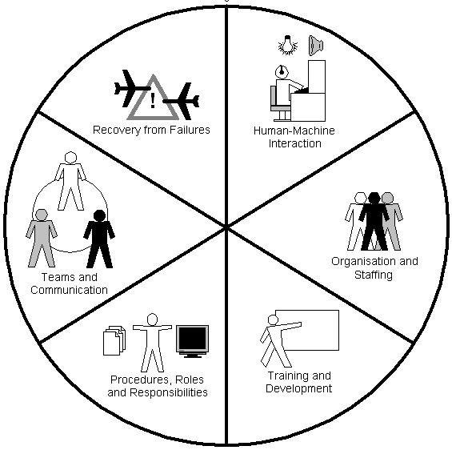
Areas of human factors: recovery from failures, human–machine interaction, organisation and staffing, training and development, procedures and roles, teams and communication. Source: Lund University School of Aviation, report for the Swedish CAA.
The error chain
An accident is rarely one error. It is a chain: a threat, a first error, an error that is not detected, a second error, an undesired state, an outcome. Each link is an opportunity to break the chain. Defences exist at three moments:
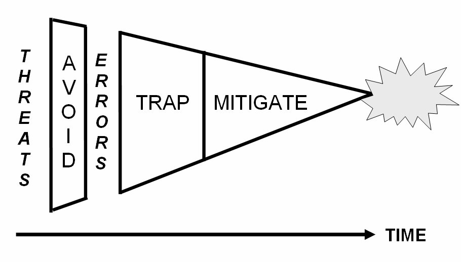
Defences against threats and errors over time: avoid, trap, mitigate. Source: Lund University School of Aviation, report for the Swedish CAA.
Tap a card to turn it over.
From causality to management
TEM looks less at why an error was made and more at whether it was detected and how the crew responded. An error detected and corrected in time — that does not lead to an undesired aircraft state — is operationally inconsequential. A mismanaged error is one that leads to another error or to an undesired aircraft state.
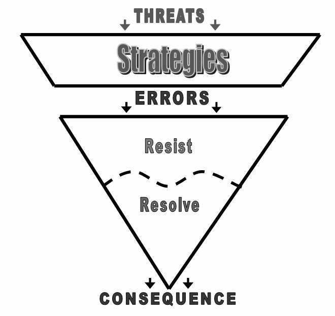
Threats and errors, the strategies that resist and resolve them, and the consequence. Source: Lund University School of Aviation, report for the Swedish CAA.
Good practice
Expect errors — your own and your colleague's. Say what you do, check what the other does, and treat each detected error as a success of the crew, not a failure of a person.
Key takeaways
Error is part of human performance; the goal is detection and management.
Break the chain: avoid, trap, mitigate.
A detected and corrected error is inconsequential; a mismanaged error leads to another error or a UAS.
Knowledge check
What is a mismanaged error?
Any error
An error that leads to an additional error or an undesired aircraft state
An error made by ATC
An intentional violation only
Answer: B. TEM defines a mismanaged error by its consequence: another error or a UAS.
Module 1 · CRM Foundations
Lesson 03: Safety Culture, SOPs and Organisational Factors
Lesson 3 of 13 · about 11 min
Learning objectives
Describe a positive safety culture.
Explain the role of SOPs and the gap between procedures and reality.
Recognise organisational (latent) threats.
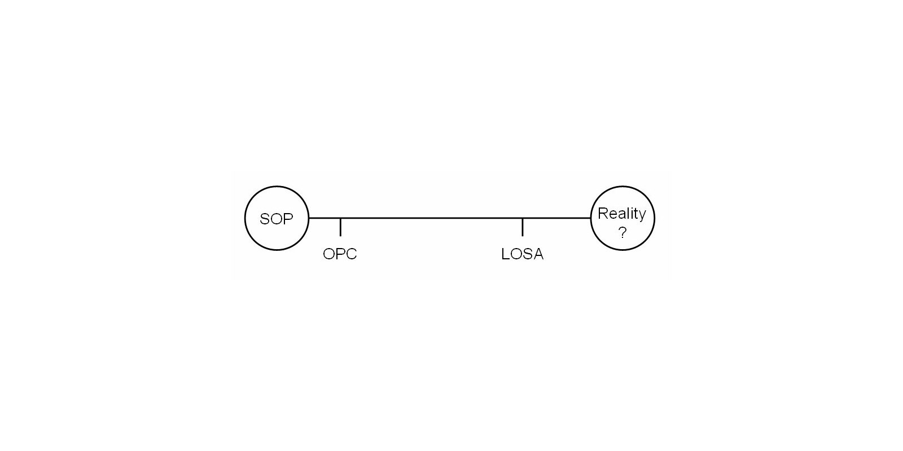
From SOP to reality.
Safety culture
The safety culture of a company is "how we do things here when nobody is watching". A positive culture is reporting (errors are reported), just (honest errors are not punished; reckless behaviour is), learning (data change the procedures and the training) and informed (management knows the real risks).
SOPs
Standard operating procedures make crews predictable to each other: any two pilots of the company can fly together. SOPs are systemic countermeasures — but they describe the work as imagined. Line observation (LOSA) and checks show the work as done.
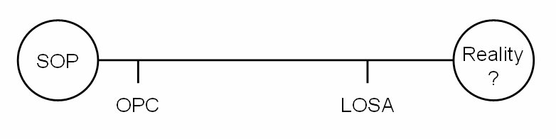
From the SOP to reality: proficiency checks (OPC) and line observations (LOSA) reveal the gap between procedures and everyday operations. Source: Lund University School of Aviation, report for the Swedish CAA.
Organisational threats
Organisational threats can be removed or minimised at source by the company. They are often latent: not visible from the flight deck until a safety analysis uncovers them.
Tap a card to turn it over.
Intentional non-compliance
Skipping a required checklist "because we are late" turns an organisational threat (pressure) into an error. Reporting the pressure is the professional answer; adapting the procedure on your own is not.
SOPs = systemic countermeasure; LOSA shows the gap between SOP and reality.
Organisational threats are often latent — report them so they can be removed at source.
Knowledge check
Who can remove organisational threats at source?
Only the captain
The aviation organisation itself
ATC
Nobody
Answer: B. Organisational threats can be controlled by the organisation; crews remain the last line of defence.
Module 2 · Threat and Error Management
Lesson 04: The TEM Model and Threats
Lesson 4 of 13 · about 13 min
Learning objectives
Describe the three components of the TEM model.
Define a threat and its types (anticipated, unexpected, latent; environmental, organisational).
Classify threats in practice.
The TEM model.
The TEM model
The TEM model is a conceptual framework to understand, from an operational point of view, the relationship between safety and human performance in a dynamic context. It is descriptive (it captures normal operations) and diagnostic (it quantifies the context and the human response). It is used for accident analysis, line audits (LOSA), licensing and training.
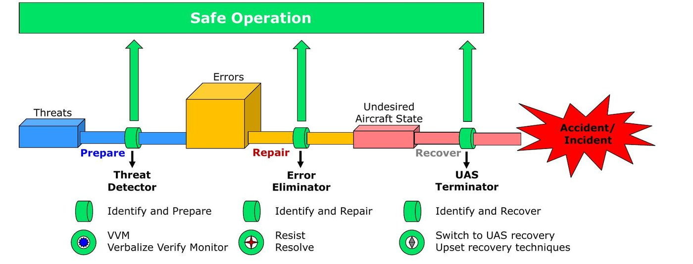
TEM model: threats → errors → undesired aircraft state → accident/incident, with the barriers that return to safe operation: prepare, repair, recover. Source: AOPA Luxembourg TEM presentation (2024).
Threats
Threats are "events or errors that occur beyond the influence of the flight crew, increase operational complexity, and must be managed to maintain the margins of safety". Threats come at the crew; errors come from the crew.
Tap a card to turn it over.
Examples of environmental threats
Weather: thunderstorms, turbulence, icing, windshear, cross/tailwind, very low or high temperatures.
ATC: traffic congestion, TCAS RA/TA, ATC error, language difficulty, non-standard phraseology, runway change, units (QFE, metres).
Airport: contaminated or short runway, confusing or faded signs, birds, aids unserviceable, construction.
Terrain: high ground, slope, lack of references, "black hole". Other: similar call signs.
Practice: is it a threat?
Classify each situation: tap Threat, Error or Undesired aircraft state.
Thunderstorms are forecast at destination for the time of arrival.
Threat — Anticipated environmental threat — brief the response before descent.
ATC changes the landing runway during the descent.
Threat — Unexpected environmental threat (ATC) — re-brief, check the FMS and the performance.
Practice: is it a threat? (2)
Classify each situation: tap Threat, Error or Undesired aircraft state.
A similar call sign is on the frequency.
Threat — Environmental threat — listen carefully and confirm the call sign.
The load sheet arrives late and the crew is under pressure to leave on time.
Threat — Organisational threat (operational pressure) — it can lead to errors if not managed.
Measure of success
Threat management is measured by whether threats are detected with enough anticipation to deploy countermeasures. It is the most proactive option to keep the margins of safety.
Key takeaways
TEM model: threats, errors, undesired aircraft states — and countermeasures.
Threats come at the crew: anticipated, unexpected, latent; environmental or organisational.
Detect threats early enough to plan the countermeasures.
Knowledge check
A threat is:
An action of the crew that leads to a deviation
An event outside the influence of the crew that increases complexity
An aircraft deviation induced by the crew
An accident
Answer: B. Threats occur beyond the influence of the flight crew.
Errors are "actions or inactions by the flight crew that lead to deviations from organisational or flight crew intentions or expectations". They reduce safety margins and increase the probability of adverse events. Errors can be spontaneous, linked to a threat, or part of an error chain.
Three categories — by the primary interaction
Tap a card to turn it over.
Error management
What matters is whether the error is detected, by whom, how the crew responds, and the outcome. Predictive monitoring identifies threats; reactive monitoring identifies errors. Systemic countermeasures (TCAS, GPWS, windshear warning, SOPs, checklists, briefings) and human-skill countermeasures (knowledge, monitoring, teamwork, workload management) resist and resolve errors.
Practice: threat or error?
Classify each situation: tap Threat, Error or Undesired aircraft state.
The PF selects a wrong altitude in the MCP after the clearance.
Error — Aircraft handling error (automation) — trapped by the PM cross-check.
The crew misses an item of the before-take-off checklist.
Error — Procedural error (checklist).
The PM reads back the wrong runway and nobody notices.
Error — Communication error (crew to external).
Practice: threat or error? (2)
Classify each situation: tap Threat, Error or Undesired aircraft state.
The controller gives a clearance into terrain by mistake.
Threat — An ATC error is a threat for the flight crew — it is outside their influence.
The crew enters the zero-fuel weight in place of the take-off weight in the FMS.
Error — Procedural error (documentation / data entry) — cross-check the performance data.
Key takeaways
Errors come from the crew: actions or inactions leading to deviations.
Handling, procedural, communication — by the primary interaction.
Non-compliance and proficiency are sub-sets, not categories.
Detect, respond, check the outcome.
Knowledge check
The flight attendant makes an error that affects the flight. For the flight crew this is:
A flight crew error
A threat
An undesired aircraft state
An outcome
Answer: B. Errors of other people (ATC, cabin, maintenance) are threats for the flight crew.
Module 2 · Threat and Error Management
Lesson 06: Undesired Aircraft States and Outcomes
Lesson 6 of 13 · about 11 min
Learning objectives
Define an undesired aircraft state (UAS).
Distinguish a UAS from an outcome.
Explain why the crew must switch from error management to UAS management.
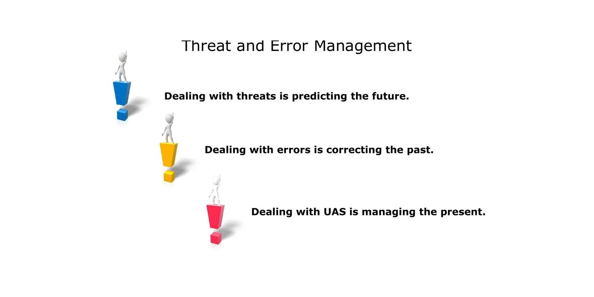
Past, present, future.
Definition
Undesired aircraft states are "flight crew-induced aircraft position or speed deviations, misapplication of flight controls, or incorrect systems configuration, associated with a reduction in margins of safety". An upset caused by a sudden technical failure, with no crew contribution, is a threat, not a UAS.
Tap a card to turn it over.
UAS and outcome
A UAS is a transitional state: the crew can still recover and restore the margins. An outcome is an end state: back to safe operation, an additional error, or an incident/accident. Example: stabilised approach (normal) → unstable approach (UAS) → runway excursion (outcome).
Switch to UAS management
A crew selects a wrong approach in the FMC, sees it before the FAF, and both pilots start reprogramming. The aircraft goes through the localiser, descends late and becomes unstable. They were locked in error management. When the aircraft is in an undesired state, the first task is to fly the aircraft — basic modes or manual — and recover the state; fix the error later.
Dealing with threats is predicting the future; dealing with errors is correcting the past; dealing with a UAS is managing the present. Source: AOPA Luxembourg TEM presentation (2024).
Practice: error or UAS?
Classify each situation: tap Threat, Error or Undesired aircraft state.
The approach is unstable at 500 ft: 15 kt fast and above the glide path.
Undesired aircraft state — Aircraft handling UAS — go around.
The crew forgets to arm the speedbrakes before landing.
Error — Procedural error — it becomes a UAS only if the configuration is wrong when it matters.
The aircraft lines up on a taxiway instead of the runway for take-off.
Undesired aircraft state — Ground navigation UAS — stop and verify.
Practice: error or UAS? (2)
Classify each situation: tap Threat, Error or Undesired aircraft state.
Flaps not set for take-off when starting the take-off roll.
Undesired aircraft state — Incorrect configuration UAS (the warning is a systemic countermeasure).
Severe turbulence suddenly rolls the aircraft past 45° of bank.
Threat — No crew contribution: a threat. A UAS appears only if the crew response creates the deviation.
Key takeaways
UAS: crew-induced deviation or configuration reducing margins.
UAS is transitional; an outcome is final.
Fly the aircraft first: switch from error management to UAS management.
Knowledge check
An unstable approach is:
A threat
An error
An undesired aircraft state
An outcome
Answer: C. It is a crew-induced aircraft state reducing margins — still recoverable by a go-around.
Module 2 · Threat and Error Management
Lesson 07: Countermeasures and a TEM Case Study
Lesson 7 of 13 · about 14 min
Learning objectives
Distinguish systemic and individual/team countermeasures.
Apply planning, execution and review countermeasures.
Analyse a case with the TEM model.
Avoid, trap, mitigate.
Countermeasures
Up to 70 % of crew activity may be countermeasure-related. Systemic countermeasures are "hard" resources in place before the flight: ACAS, GPWS, SOPs, checklists, briefings, training. Individual and team countermeasures are the skills, knowledge and attitudes developed by CRM training.
Repair (errors): identify and repair — resist, resolve.
Recover (UAS): identify and recover — switch to UAS recovery, upset recovery techniques.
Case study: B777 non-precision approach, night
VOR approach, good visibility, autopilot in LNAV/VNAV, first officer flying. The approach ended about 1,000 ft below the path at 6.4 NM, and the go-around instruction from the tower was followed about 50 seconds late.
Threat: being below the path on a non-precision approach. Tool: predictive monitoring and enhanced situation awareness. Source: AOPA Luxembourg TEM presentation (2024).
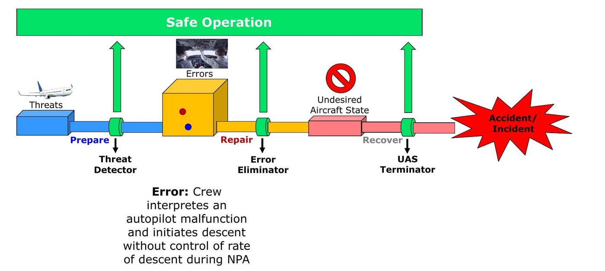
Error: the crew interprets an autopilot malfunction and starts a descent without controlling the rate of descent. Source: AOPA Luxembourg TEM presentation (2024).Trigger: use of FLCH (LVL CHG) for the approach — not to be used on final approach below 1,000 ft. Source: AOPA Luxembourg TEM presentation (2024).UAS: aircraft below the profile. Source: AOPA Luxembourg TEM presentation (2024).
Classify the chain
Classify each situation: tap Threat, Error or Undesired aircraft state.
At 3,300 ft the autopilot changes from VNAV SPEED to VNAV PATH and starts a climb to intercept the computed path.
Threat — Automation behaviour not anticipated by the crew: an automation surprise — a threat.
The crew changes the target altitude to 970 ft and selects FLCH for the descent.
Error — Aircraft handling error (automation mode) against the procedure.
Classify the chain (2)
Classify each situation: tap Threat, Error or Undesired aircraft state.
The aircraft is about 1,000 ft below the approach path at 6.4 NM.
Undesired aircraft state — Aircraft handling UAS — recover the flight path.
The tower instructs a go-around; the crew replies 'climbing' but continues for about 50 seconds.
Error — Communication and procedural error — a go-around instruction must be followed promptly.
Lessons of the case
Lessons
Monitor the flight path closely; cross-check actual against published altitudes; use appropriate automation modes; redirect attention to the priority task; follow a go-around instruction promptly.
Key takeaways
Systemic + individual/team countermeasures; about 70 % of crew activity.
The best situation awareness keeps the smallest gap between the crew's picture and reality. The NOTECHS elements are: awareness of aircraft systems, of the external environment, and of time.
Information acquisition and processing
Attention is limited: we sample information, and under stress the sampling narrows.
Expectation shapes perception: we hear the clearance we expect, and see the runway we expect.
Verbalise: thinking aloud lets the other pilot check your picture ("verbalise, verify, monitor").
Use "What if…?" to keep projecting ahead.
Workload management
Priorities do not change: aviate, navigate, communicate, manage systems. Plan the high-workload phases early (briefings before top of descent), delegate tasks, use the automation level that reduces workload, and say when you are saturated. Avoid task fixation: one pilot always flies the aircraft.
Under-load
Low workload is also a threat: vigilance drops on long cruise phases at night. Keep monitoring routines and planned cross-checks.
Lesson 09: Decision Making, Stress, Fatigue and Vigilance
Lesson 9 of 13 · about 12 min
Learning objectives
Apply a structured decision-making model.
Recognise the effects of stress and manage them.
Manage fatigue and vigilance.
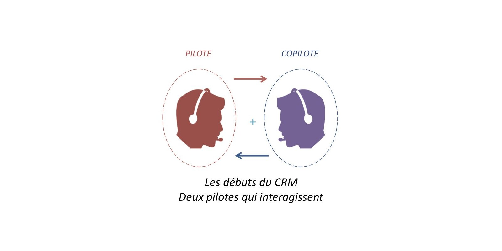
Two pilots who interact.
Decision making
NOTECHS assesses three elements: problem definition and diagnosis, option generation, risk assessment and option selection. A structured model helps when time allows:
Tap a card to turn it over.
Traps in decisions
Plan continuation ("get-there-itis"): the destination becomes the goal; signs of deterioration are ignored.
Confirmation bias: we look for information that supports what we already think.
Illusion of experience: years without an event make us underestimate risk.
Pressure: time, commercial or social pressure pushes to accept more risk. Know how to say no.
Always keep a plan B — and a plan C.
Stress
Some stress improves performance; too much narrows attention, slows perception, and makes us fall back on routines that may not fit the situation ("regression"). Under high stress: slow down, follow the priorities, use the checklist, share the load, verbalise.
Fatigue and vigilance
Fatigue causes errors — slower reactions, poorer decisions, micro-sleeps. Know the window of circadian low (WOCL), use the company fatigue procedures, and use controlled rest only as the OM allows. Report fatigue: being unfit to fly is a professional decision. See also the Algerian Regulations and Duty Time course.
How does a young first officer tell an experienced captain that he is wrong? With a graded, persistent message:
Tap a card to turn it over.
Leadership and authority
NOTECHS leadership and managerial skills: use of authority and assertiveness, providing and maintaining standards, planning and co-ordination, workload management. The cockpit gradient should be neither too steep (the first officer does not dare to speak) nor too flat (nobody decides). The captain sets the tone in the briefing: "If you see anything you don't like, tell me."
Co-operation and synergy
NOTECHS co-operation: team building and maintaining, consideration of others, support of others, conflict solving. Synergy: a crew performs better than the sum of its members when information is shared and every member is used.
Practice: communication
Classify each situation: tap Threat, Error or Undesired aircraft state.
ATC clears 'descend FL120'; the PM reads back 'FL110' and the controller does not correct it.
Error — Communication error by the crew — and the uncorrected read-back is an ATC threat. Closed-loop communication traps it.
The cabin crew does not report smoke smell because 'the pilots are busy'.
Threat — For the flight crew, a cabin event not reported is a threat; the cure is a joint briefing that invites communication.
Which is NOT a NOTECHS leadership/managerial element?
Use of authority and assertiveness
Planning and co-ordination
Awareness of time
Workload management
Answer: C. Awareness of time belongs to situation awareness.
Module 3 · Non-Technical Skills
Lesson 11: Automation and the Philosophy of its Use
Lesson 11 of 13 · about 11 min
Learning objectives
Define an automation surprise.
Apply the company philosophy of automation use.
Recognise when to downgrade the level of automation.
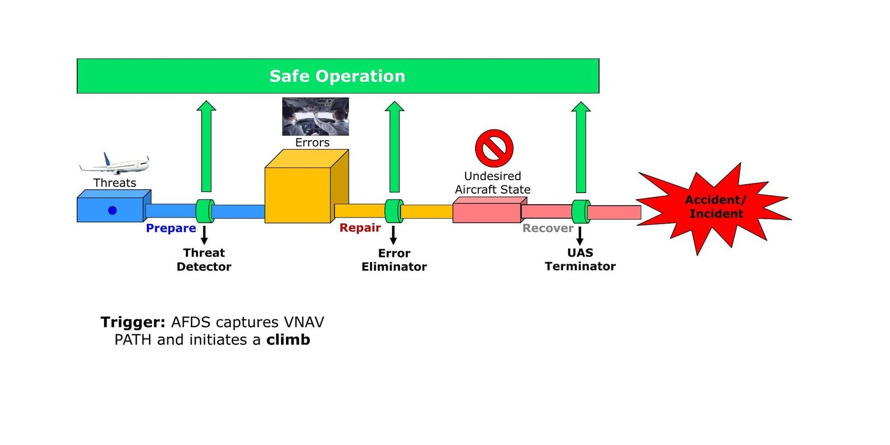
Automation surprise.
Automation surprise
An automation surprise is a behaviour of the automation not anticipated by the pilot. It may come from internal logic, inadequate manipulation, lack of transparency or lack of understanding, and it can seriously load the pilot's cognitive capacity — "what is it doing now?".
Principles
Brief the automation: who sets what, which modes are planned for the approach.
Verbalise and verify the FMA: every mode change is announced and checked.
Use the appropriate level: the highest level that reduces workload is not always the best; if the automation does not do what you want, take a lower level — basic modes or manual flight.
Cross-check entries: performance data, FMS routes and approach selection are verified by the other pilot.
Keep manual flying skills: see the UPRT course.
Back to the B777 case
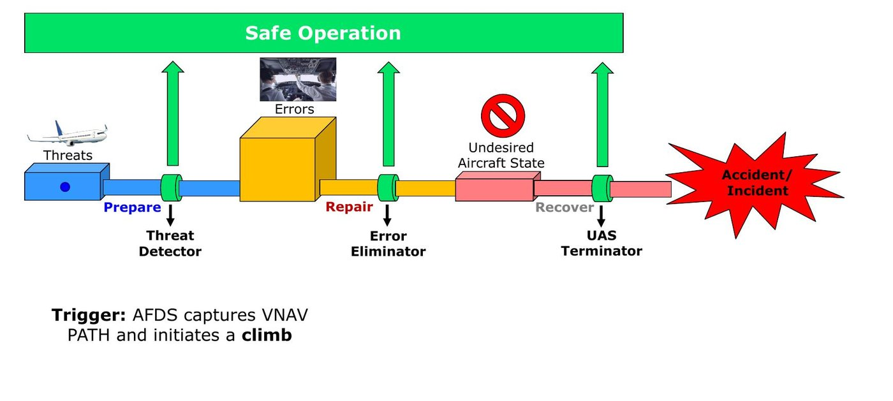
Trigger: the autopilot captures VNAV PATH and starts a climb — an automation surprise. Source: AOPA Luxembourg TEM presentation (2024).
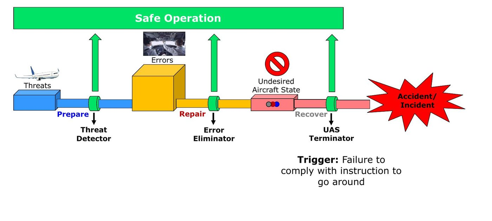
Trigger: failure to comply with the instruction to go around. Source: AOPA Luxembourg TEM presentation (2024).
Think, then tap.
Key takeaways
Automation surprise = unanticipated behaviour; ask 'what is it doing now?'.
Brief, verbalise, verify the FMA; cross-check entries.
If the automation does not do what you want, take a lower level.
Knowledge check
The automation does something you do not understand on final approach. Best action?
Keep reprogramming the FMS
Take a lower level of automation and fly the path; go around if needed
Ignore it
Ask ATC
Answer: B. Fly the aircraft first — reduce the level of automation.
Describe the four NOTECHS categories and their elements.
Use the rating scale of the company form (OM D 2.6.68).
Explain the observation and feedback cycle.
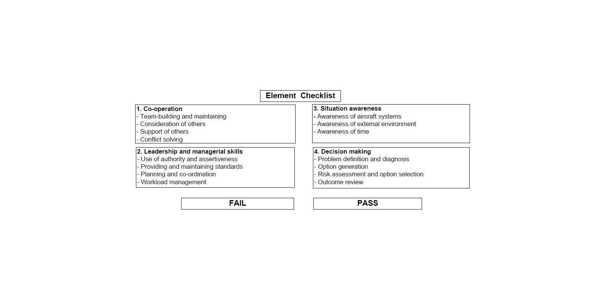
NOTECHS elements.
The four categories
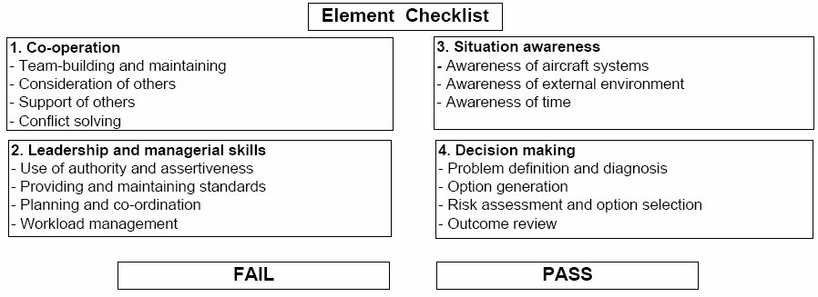
NOTECHS element checklist: co-operation, leadership and managerial skills, situation awareness, decision making. Source: Lund University School of Aviation, report for the Swedish CAA.
Tap a card to turn it over.
The rating scale
The company form (OM D 2.6.68) rates each crew member by sector or simulator session, from very poor to very good, with comments:
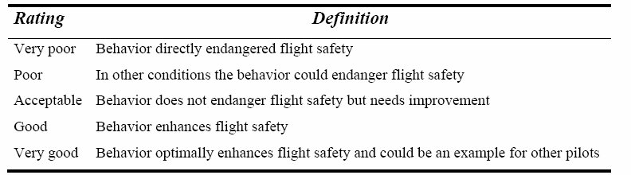
Rating scale: very poor — behaviour directly endangered flight safety; poor — could endanger; acceptable — does not endanger but needs improvement; good — enhances safety; very good — optimally enhances safety, an example for other pilots. Source: Lund University School of Aviation, report for the Swedish CAA.
Principles of assessment
Only observable behaviour is rated — not personality or attitude.
A rating must be linked to a technical consequence to be "unacceptable".
Repeated behaviour is needed to conclude a problem.
The behaviour must be explained in the debriefing.
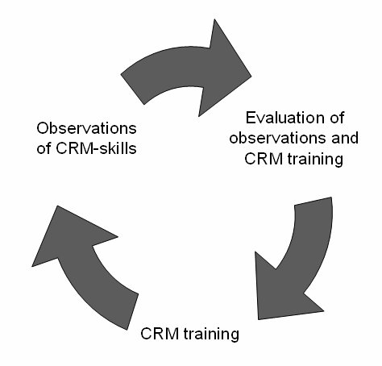
Observations of CRM skills feed the evaluation of the observations and of CRM training, which updates the CRM training. Source: Lund University School of Aviation, report for the Swedish CAA.
In the company
Recurrent CRM/TEM elements are not assessed; non-technical skills are observed by TRI/TRE in simulator and line checks, and the recurrent programme is updated from these crew assessments (OM D 2.4.5).
After an uncontained failure of engine 2 shortly after take-off from Singapore, the crew faced dozens of ECAM messages. With five pilots on the flight deck, they shared the workload, verified the systems status, calculated the landing performance and landed safely. All 469 occupants survived. The FAA described the crew performance as an example of CRM at its best.
Tap a card to turn it over.
Northwest 85 — B747-400, rudder hard-over (2002)
Over the Bering Sea, a lower rudder jammed. For tens of minutes the crew fought to keep the aircraft stable, then diverted and landed in Anchorage. The captain said it was "a classic application of CRM": four pilots shared the physical and mental work and kept everyone informed.
Tap a card to turn it over.
US Airways 1549 — A320, Hudson River (2009)
After a bird strike caused the loss of both engines, the crew ditched in the Hudson River; all 155 occupants survived. The NTSB noted that crew teamwork and CRM contributed to the outcome: the captain flew, the first officer ran the checklist, and decisions were made in seconds.
Tap a card to turn it over.
Your turn
Classify each situation: tap Threat, Error or Undesired aircraft state.
A bird strike causes the loss of both engines.
Threat — An external event beyond the crew's influence.
Both pilots try to restart the engines and nobody flies the aircraft.
Error — A workload management error — the countermeasure is task sharing: one flies.
The aircraft decelerates below the minimum speed during the troubleshooting.
Undesired aircraft state — A crew-induced speed deviation reducing margins.
Key takeaways
In every case: fly first, share the workload, communicate, decide, verify.
CRM turns individual skills into crew performance.
Use TEM to analyse any event: threats, errors, UAS, countermeasures.
Knowledge check
What did the three crews have in common?
Luck only
Clear task sharing, communication and structured decisions
Automation alone
No checklists
Answer: B. CRM skills: leadership, workload sharing, communication and decision making.
Training material only. It does not replace the Aircraft Flight Manual, FCOM, QRH, MEL or the Domestic Airlines Operations Manual, which always take precedence.